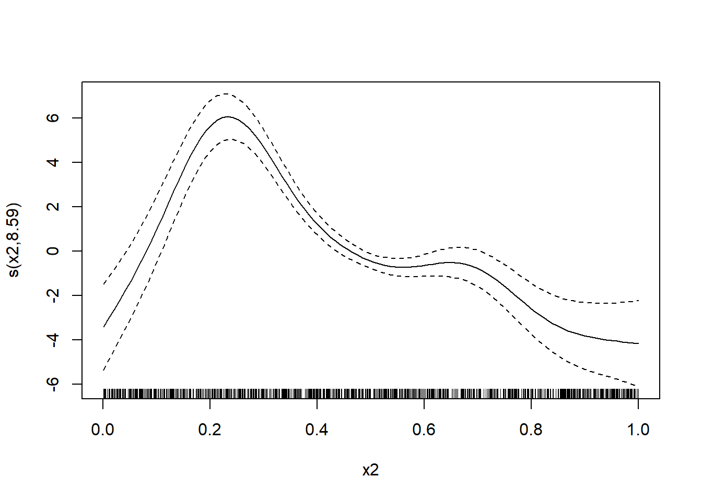
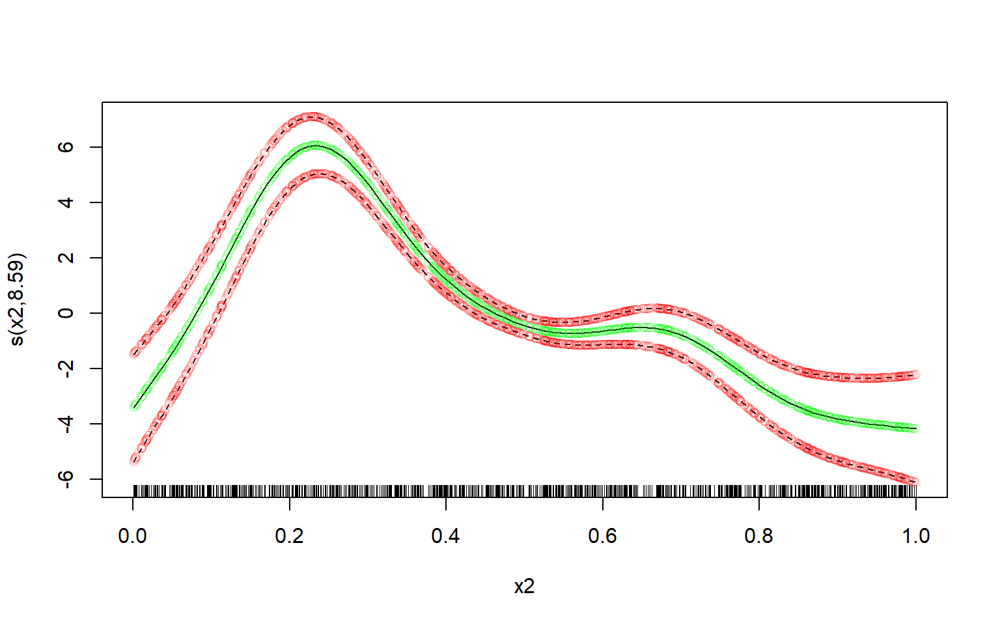
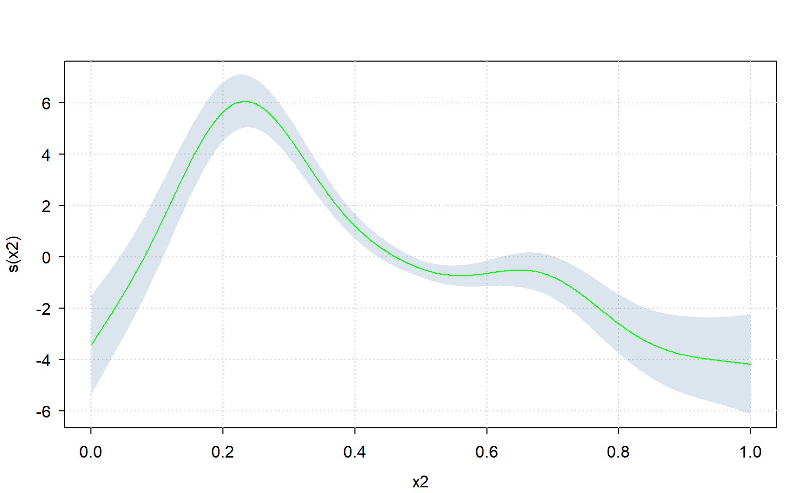

mat <- matrix(rnorm(20), nrow = 5)
bcr(mat) <- TRUE # `bcr` is short-hand for `broadcaster`
print(mat)
#> [,1] [,2] [,3] [,4]
#> [1,] -0.6264538 -0.8204684 1.5117812 -0.04493361
#> [2,] 0.1836433 0.4874291 0.3898432 -0.01619026
#> [3,] -0.8356286 0.7383247 -0.6212406 0.94383621
#> [4,] 1.5952808 0.5757814 -2.2146999 0.82122120
#> [5,] 0.3295078 -0.3053884 1.1249309 0.59390132
#> broadcasterPractical Applications
Broadcasting comes up frequent enough in real world problems. This page gives a few examples of these.
1 Sweep
Anytime you would normally use sweep(), you can now use broadcasting, which is faster and more memory-efficient.
Consider for example the following matrix:
We want to scale each column of this matrix, by subtracting its mean and dividing by its standard deviation.
This can be done using sweep() like so:
scaled <- sweep(mat, 2, colMeans(mat), FUN = "-")
scaled <- sweep(scaled, 2, matrixStats::colSds(mat), FUN = "/")
print(scaled)
#> [,1] [,2] [,3] [,4]
#> [1,] -0.78636077 -1.4287607 0.9831766 -1.0853730
#> [2,] 0.05657773 0.5267275 0.2346563 -1.0235351
#> [3,] -1.00401553 0.9018514 -0.4399058 1.0418477
#> [4,] 1.52544305 0.6588265 -1.5030097 0.7780561
#> [5,] 0.20835553 -0.6586446 0.7250827 0.2890044
#> broadcasterBut it can be done much faster and more memory-efficiently with broadcasting like so:
means <- matrix(colMeans(mat), nrow = 1L)
sds <- matrix(matrixStats::colSds(mat), nrow = 1L)
bcr(means) <- bcr(sds) <- TRUE
scaled <- (mat - means) / sds
print(scaled)
#> [,1] [,2] [,3] [,4]
#> [1,] -0.78636077 -1.4287607 0.9831766 -1.0853730
#> [2,] 0.05657773 0.5267275 0.2346563 -1.0235351
#> [3,] -1.00401553 0.9018514 -0.4399058 1.0418477
#> [4,] 1.52544305 0.6588265 -1.5030097 0.7780561
#> [5,] 0.20835553 -0.6586446 0.7250827 0.2890044
#> broadcasterThe larger the matrix mat becomes, the more advantageous it becomes to use broadcasting rather than sweeping.
2 Binding arrays along an arbitrary dimension
The abind() function, from the package of the same name, allows one to bind arrays along any arbitrary dimensions (not just along rows or columns).
Unfortunately, abind() does not support broadcasting, which can lead to frustrations such as the following:
(x <- array(1:27, c(3,3,3)))
(y <- array(1L, c(3,3,1)))
abind::abind(x, y, along = 2)
#> Error in abind(x, y, along = 2) :
#> arg 'X2' has dims=3, 3, 1; but need dims=3, X, 3Here, abind() is complaining about the dimensions not fitting perfectly.
But intuitively, binding x and y should be possible, with dimension 3 from array y being broadcasted to size 3.
The bind_array() function provided by the ‘broadcast’ package can bind the arrays without problems:
x <- array(1:27, c(3,3,3))
y <- array(1L, c(3,3,1))
bind_array(list(x, y), 2)
#> , , 1
#>
#> [,1] [,2] [,3] [,4] [,5] [,6]
#> [1,] 1 4 7 1 1 1
#> [2,] 2 5 8 1 1 1
#> [3,] 3 6 9 1 1 1
#>
#> , , 2
#>
#> [,1] [,2] [,3] [,4] [,5] [,6]
#> [1,] 10 13 16 1 1 1
#> [2,] 11 14 17 1 1 1
#> [3,] 12 15 18 1 1 1
#>
#> , , 3
#>
#> [,1] [,2] [,3] [,4] [,5] [,6]
#> [1,] 19 22 25 1 1 1
#> [2,] 20 23 26 1 1 1
#> [3,] 21 24 27 1 1 1bind_array() is also considerably faster and more memory efficient than abind().
3 Perform computation on all possible pairs
Suppose you have 2 vectors of character strings, and you want to concatenate all possible pairs of these strings.
In base , this would require a either a loop (which is slow), or repeating the vectors several times (which requires more memory), or use of the outer() function (which is both slow and requires lots of memory).
The ’broadcasted way to do this, is to make the vectors orthogonal, and concatenate the strings of the orthogonal vectors - this is both fast and memory efficient.
For example:
x <- array(letters[1:10], c(10, 1))
y <- array(letters[1:10], c(1, 10))
out <- bc.str(x, y, "+")
dimnames(out) <- list(x, y)
print(out)
#> a b c d e f g h i j
#> a "aa" "ab" "ac" "ad" "ae" "af" "ag" "ah" "ai" "aj"
#> b "ba" "bb" "bc" "bd" "be" "bf" "bg" "bh" "bi" "bj"
#> c "ca" "cb" "cc" "cd" "ce" "cf" "cg" "ch" "ci" "cj"
#> d "da" "db" "dc" "dd" "de" "df" "dg" "dh" "di" "dj"
#> e "ea" "eb" "ec" "ed" "ee" "ef" "eg" "eh" "ei" "ej"
#> f "fa" "fb" "fc" "fd" "fe" "ff" "fg" "fh" "fi" "fj"
#> g "ga" "gb" "gc" "gd" "ge" "gf" "gg" "gh" "gi" "gj"
#> h "ha" "hb" "hc" "hd" "he" "hf" "hg" "hh" "hi" "hj"
#> i "ia" "ib" "ic" "id" "ie" "if" "ig" "ih" "ii" "ij"
#> j "ja" "jb" "jc" "jd" "je" "jf" "jg" "jh" "ji" "jj"
4 Modifying an Array Along a Dimension
Consider the following array:
x <- array(1:27, c(3,3,3))
print(x)
#> , , 1
#>
#> [,1] [,2] [,3]
#> [1,] 1 4 7
#> [2,] 2 5 8
#> [3,] 3 6 9
#>
#> , , 2
#>
#> [,1] [,2] [,3]
#> [1,] 10 13 16
#> [2,] 11 14 17
#> [3,] 12 15 18
#>
#> , , 3
#>
#> [,1] [,2] [,3]
#> [1,] 19 22 25
#> [2,] 20 23 26
#> [3,] 21 24 27Suppose one wishes to multiply all values of the second column with 2, and all values of the third column with 3.
This can be done with ‘broadcast’, by creating a multiplier vector whose dimensional direction is aligned with - in this case - the columns, and multiplying the array with said vector.
We don’t want to change the first column, so we multiply the first column with 1.
So we can do this as follows:
multiplier <- array(c(1, 2, 3), c(1, 3))
print(multiplier)
#> [,1] [,2] [,3]
#> [1,] 1 2 3
bcr(x) <- bcr(multiplier) <- TRUE
x * multiplier
#> , , 1
#>
#> [,1] [,2] [,3]
#> [1,] 1 8 21
#> [2,] 2 10 24
#> [3,] 3 12 27
#>
#> , , 2
#>
#> [,1] [,2] [,3]
#> [1,] 10 26 48
#> [2,] 11 28 51
#> [3,] 12 30 54
#>
#> , , 3
#>
#> [,1] [,2] [,3]
#> [1,] 19 44 75
#> [2,] 20 46 78
#> [3,] 21 48 81
#>
#> broadcasterSuppose that, instead of multiplying the 3 columns with 1, 2, and 3, we wish to multiply the rows with 1, 2, and 3.
This again can by creating a multiplier vector - this time aligned with the rows.
Note that in the ‘broadcast’ package, a vector without dimensions is interpreted as a vector aligned with rows (confusingly called a “column vector” in mathematics). Like so:
multiplier <- c(1, 2, 3) # effectively the same as array(c(1, 2, 3), c(3, 1))
print(multiplier)
#> [1] 1 2 3
bcr(x) <- bcr(multiplier) <- TRUE
x * multiplier
#> , , 1
#>
#> [,1] [,2] [,3]
#> [1,] 1 4 7
#> [2,] 4 10 16
#> [3,] 9 18 27
#>
#> , , 2
#>
#> [,1] [,2] [,3]
#> [1,] 10 13 16
#> [2,] 22 28 34
#> [3,] 36 45 54
#>
#> , , 3
#>
#> [,1] [,2] [,3]
#> [1,] 19 22 25
#> [2,] 40 46 52
#> [3,] 63 72 81
#>
#> broadcasterAs a final example, we want to multiply layers (3rd dimension) 2 and 3 of x with 2 and 3, respectively.
As you may have guessed, one can do so by creating a multiplier vector aligned with the layers, and multiplying that vector with the array, like so:
multiplier <- array(c(1, 2, 3), c(1, 1, 3))
print(multiplier)
#> , , 1
#>
#> [,1]
#> [1,] 1
#>
#> , , 2
#>
#> [,1]
#> [1,] 2
#>
#> , , 3
#>
#> [,1]
#> [1,] 3
bcr(x) <- bcr(multiplier) <- TRUE
x * multiplier
#> , , 1
#>
#> [,1] [,2] [,3]
#> [1,] 1 4 7
#> [2,] 2 5 8
#> [3,] 3 6 9
#>
#> , , 2
#>
#> [,1] [,2] [,3]
#> [1,] 20 26 32
#> [2,] 22 28 34
#> [3,] 24 30 36
#>
#> , , 3
#>
#> [,1] [,2] [,3]
#> [1,] 57 66 75
#> [2,] 60 69 78
#> [3,] 63 72 81
#>
#> broadcaster
5 Grouped Broadcasting
5.1 Casting with equal group sizes
We have a matrix of points (ranging from 0 to 100) students (n = 3) have achieved in for 2 homework exercises:
x <- cbind(
student = rep(1:3, each = 2),
homework = rep(1:2, 3),
points = sample(0:100, 6)
)
print(x)
#> student homework points
#> [1,] 1 1 41
#> [2,] 1 2 37
#> [3,] 2 1 19
#> [4,] 2 2 27
#> [5,] 3 1 98
#> [6,] 3 2 43However, the teacher has realised that the second homework assignment was way more difficult than the first, and thus decided the second home work assignments should be weigh more - 2 times more to be precise.
Thus the points for homework assignment 2 should be multiplied by 2. There are various ways to do this. For the sake of demonstration, an approach using acast() is shown here, as this is an example of a grouped broadcasted operation.
‘broadcast’ allows users to cast subsets of an array onto a new dimension, based on some grouping factor - in this case the homework ID is the grouping factor, and the following will do the job:
margin <- 1L # we cast from the rows, so margin = 1
grp <- as.factor(x[, "homework"]) # factor to define which rows belongs to which group
levels(grp) <- c("assignment 1", "assignment 2") # names for the new dimension
out <- acast(x, margin, grp) # casting is performed here
bcr(out) <- TRUE
print(out)
#> , , assignment 1
#>
#> student homework points
#> [1,] 1 1 41
#> [2,] 2 1 19
#> [3,] 3 1 98
#>
#> , , assignment 2
#>
#> student homework points
#> [1,] 1 2 37
#> [2,] 2 2 27
#> [3,] 3 2 43
#>
#> broadcasterNotice that the dimension-names of the new dimension (dimension 3) are equal to levels(grp).
With the group-cast array, one can use broadcasting to easily do things like multiply the values in each group with a different value.
In this case, we need to multiply the values for assignment 2 with 2, and leave the rest as-is.
Like so:
# create the multiplication factor array:
mult <- array(
1,
dim = c(1, 3, 2),
dimnames = list(
NULL,
c("mult_id", "mult_homework", "mult_points"),
c("assignment 1", "assignment 2")
)
)
mult[, "mult_points", c("assignment 1", "assignment 2")] <- c(1, 2)
bcr(mult) <- TRUE
print(mult)
#> , , assignment 1
#>
#> mult_id mult_homework mult_points
#> [1,] 1 1 1
#>
#> , , assignment 2
#>
#> mult_id mult_homework mult_points
#> [1,] 1 1 2
#>
#> broadcaster
# grouped broadcasted operation:
out2 <- out * mult
dimnames(out2) <- dimnames(out)
print(out2)
#> , , assignment 1
#>
#> student homework points
#> [1,] 1 1 41
#> [2,] 2 1 19
#> [3,] 3 1 98
#>
#> , , assignment 2
#>
#> student homework points
#> [1,] 1 2 74
#> [2,] 2 2 54
#> [3,] 3 2 86
#>
#> broadcasterNow the array needs to be reverse-cast back to its original shape.
Reverse-casting an array can be done be combining asplit() with bind_array():
asplit(out2, ndim(out2)) |> bind_array(along = margin, name_along = FALSE)
#> student homework points
#> [1,] 1 1 41
#> [2,] 2 1 19
#> [3,] 3 1 98
#> [4,] 1 2 74
#> [5,] 2 2 54
#> [6,] 3 2 86…though the order of, in this case, the rows (because margin = 1) will not necessarily be the same as the original array.
5.2 Casting with unequal group sizes
The casting arrays also works when the groups have unequal sizes, though there are a few things to keep in mind.
Let’s start with a different input array:
x <- cbind(
id = c(rep(1:3, each = 2), 1),
grp = c(rep(1:2, 3), 2),
val = rnorm(7)
)
print(x)
#> id grp val
#> [1,] 1 1 0.61982575
#> [2,] 1 2 -0.05612874
#> [3,] 2 1 -0.15579551
#> [4,] 2 2 -1.47075238
#> [5,] 3 1 -0.47815006
#> [6,] 3 2 0.41794156
#> [7,] 1 2 1.35867955Once again, the acast() to fill the gaps, otherwise an error is called.
Thus one can cast in this case like so:
grp <- as.factor(x[, 2])
levels(grp) <- c("a", "b")
margin <- 1L
out <- acast(x, margin, grp, fill = TRUE)
print(out)
#> , , a
#>
#> id grp val
#> [1,] 1 1 0.6198257
#> [2,] 2 1 -0.1557955
#> [3,] 3 1 -0.4781501
#> [4,] NA NA NA
#>
#> , , b
#>
#> id grp val
#> [1,] 1 2 -0.05612874
#> [2,] 2 2 -1.47075238
#> [3,] 3 2 0.41794156
#> [4,] 1 2 1.35867955Notice that some values are missing ( NA ); if some groups have unequal number of elements, acast() needs to fill the gaps with missing values. By default, gaps are filled with NA if x is atomic, and with list(NULL) if x is recursive. The user can change the filling value through the fill_value argument.
Once again, we can get the original array back when we’re done like so:
asplit(out, ndim(out)) |> bind_array(along = margin)
#> id grp val
#> a.1 1 1 0.61982575
#> a.2 2 1 -0.15579551
#> a.3 3 1 -0.47815006
#> a.4 NA NA NA
#> b.1 1 2 -0.05612874
#> b.2 2 2 -1.47075238
#> b.3 3 2 0.41794156
#> b.4 1 2 1.35867955… but we do keep the missing values when the groups have an unequal number of elements.
6 Nested Binding with Broadcasting
Consider the following 2 lists x and y:
x <- list(
group1 = list(
class1 = list(
height = rnorm(10, 170),
weight = rnorm(10, 80),
sex = sample(c("M", "F", NA), 10, TRUE)
),
class2 = list(
height = rnorm(10, 170),
weight = rnorm(10, 80),
sex = sample(c("M", "F", NA), 10, TRUE)
)
),
group2 = list(
class1 = list(
height = rnorm(10, 170),
weight = rnorm(10, 80),
sex = sample(c("M", "F", NA), 10, TRUE)
),
class2 = list(
height = rnorm(10, 170),
weight = rnorm(10, 80),
sex = sample(c("M", "F", NA), 10, TRUE)
)
)
)
y <- list(
group1 = list(
class1 = list(
smoker = sample(c(TRUE, FALSE), 10, TRUE)
),
class2 = list(
smoker = sample(c(TRUE, FALSE), 10, TRUE)
)
),
group2 = list(
class1 = list(
smoker = sample(c(TRUE, FALSE), 10, TRUE)
),
class2 = list(
smoker = sample(c(TRUE, FALSE), 10, TRUE)
)
)
)We wish 2 merge these 2 lists, such that after every list-element “sex” in list x, the element “smoker” follows in list y.
This can be done with a double for-loop in , but if both lists are large, this becomes slow. With the ‘broadcast’ package, one can cast both lists as dimensional, and then use broadcasted binding to merge x and y together with ease. Moreover, if a list can be represented dimensionally rather than hierarchically, one should do so to make further analyses and manipulations much easier.
So let’s first cast both lists from hierarchical lists to dimensional lists:
(x2 <- cast_hier2dim(x, direction.names = 1))
#> , , group1
#>
#> class1 class2
#> height numeric,10 numeric,10
#> weight numeric,10 numeric,10
#> sex character,10 character,10
#>
#> , , group2
#>
#> class1 class2
#> height numeric,10 numeric,10
#> weight numeric,10 numeric,10
#> sex character,10 character,10
(y2 <- cast_hier2dim(y, direction.names = 1))
#> , , group1
#>
#> class1 class2
#> smoker logical,10 logical,10
#>
#> , , group2
#>
#> class1 class2
#> smoker logical,10 logical,10Now bind these lists together using bind_array() can handle recursive arrays (i.e. dimensional lists) natively with ease:
z <- bind_array(list(x2, y2), 1L)
print(z)
#> , , group1
#>
#> class1 class2
#> height numeric,10 numeric,10
#> weight numeric,10 numeric,10
#> sex character,10 character,10
#> smoker logical,10 logical,10
#>
#> , , group2
#>
#> class1 class2
#> height numeric,10 numeric,10
#> weight numeric,10 numeric,10
#> sex character,10 character,10
#> smoker logical,10 logical,10What we’ve just done would require an expensive double for-loop in base . But notice how easily we’ve achieved this goal with ‘broadcast’: just 2 steps - casting and then binding!
If you really want z to be a nested list, you can cast it back to hierarchical:
z2 <- cast_dim2hier(z)Remember that elements of a lists do not contain the actual data; they point to the data; casting lists from dimensional to hierarchical and vice-versa only makes inexpensive shallow copies, not deep copies. It’s also quite fast.
7 Nested Arithmetic with Broadcasting
We have a class of students who scored certain amounts of points for homework exercises. The software used for collecting the points for these homework exercises produces on object that is read by as a nested list, like so:
x <- list(
student1 = list(
homework1 = sample(0:100, 5),
homework2 = sample(0:100, 5),
homework3 = sample(0:100, 5)
),
student2 = list(
homework1 = sample(0:100, 5),
homework2 = sample(0:100, 5),
homework3 = sample(0:100, 5)
),
student3 = list(
homework1 = sample(0:100, 5),
homework2 = sample(0:100, 5),
homework3 = sample(0:100, 5)
)
)Since all values are numbers, the teacher would like the list to be turned in a numeric array, to make analysis easier.
This can be done with the ‘broadcast’ package with the following steps.
First, turn the nested list into a shallow dimensional list:
x2 <- cast_hier2dim(x, in2out = FALSE, direction.names = 1L)
print(x2)
#> homework1 homework2 homework3
#> student1 integer,5 integer,5 integer,5
#> student2 integer,5 integer,5 integer,5
#> student3 integer,5 integer,5 integer,5Second, turn the dimensional list into an atomic array using cast_shallow2atomic():
x3 <- cast_shallow2atomic(x2, 1L)
print(x3)
#> , , homework1
#>
#> student1 student2 student3
#> [1,] 34 64 23
#> [2,] 98 27 36
#> [3,] 76 77 14
#> [4,] 56 30 13
#> [5,] 70 11 80
#>
#> , , homework2
#>
#> student1 student2 student3
#> [1,] 24 92 81
#> [2,] 30 79 96
#> [3,] 36 43 95
#> [4,] 91 73 71
#> [5,] 27 25 52
#>
#> , , homework3
#>
#> student1 student2 student3
#> [1,] 61 32 55
#> [2,] 19 3 70
#> [3,] 28 52 90
#> [4,] 41 85 49
#> [5,] 59 88 72Now that we have a numeric array, broadcasted numeric operations can be performed on it. In this case, the teacher would like to multiply the scores of the second homework assignment by 2, as it was deemed much harder than the other 2 homework assignments.
This can be done like so:
# creating multiplier array:
multiplier <- vector2array(c(1L, 2L, 1L), 3L, 3L, TRUE)
dimnames(multiplier)[[3L]] <- dimnames(x3)[[3L]]
print(multiplier)
#> , , homework1
#>
#> [,1]
#> [1,] 1
#>
#> , , homework2
#>
#> [,1]
#> [1,] 2
#>
#> , , homework3
#>
#> [,1]
#> [1,] 1
#>
#> broadcaster
# broadcasted multiply x3 with multiplier:
bcr(x3) <- TRUE
x3 * multiplier
#> , , 1
#>
#> student1 student2 student3
#> [1,] 34 64 23
#> [2,] 98 27 36
#> [3,] 76 77 14
#> [4,] 56 30 13
#> [5,] 70 11 80
#>
#> , , 2
#>
#> student1 student2 student3
#> [1,] 48 184 162
#> [2,] 60 158 192
#> [3,] 72 86 190
#> [4,] 182 146 142
#> [5,] 54 50 104
#>
#> , , 3
#>
#> student1 student2 student3
#> [1,] 61 32 55
#> [2,] 19 3 70
#> [3,] 28 52 90
#> [4,] 41 85 49
#> [5,] 59 88 72
#>
#> broadcasterThus we started off with a nested list, through which one cannot broadcast and for which little to no vectorized operators are available.
By turning the nested list into a dimensional atomic array, broadcasted and vectorized operations cann more easily be used.
8 Manually compute confidence/credible interval for a spline
The sd_lc() function computes the standard deviation for a linear combination of random variables. One of its notable use-cases is to compute the confidence interval (or credible interval if you’re going Bayesian) of a spline.
Packages like ‘mgcv’ provides the user to plot and analyse the smoothers with confidence from a fitted GAM.
But sometimes one may want to compute spline intervals manually, like in the following cases:
- Some packages (like the ‘INLA’ package), do not provide a clear and consistent way to compute the confidence intervals of a spline.
- One may want to use a type of spline not covered by the package you’re using (this is especially true when using a novel spline). In such cases, you’ll have to compute the spline mean and confidence/credible intervals on your own.
So one practical application of sd_lc() is computing confidence/credible intervals of splines when a package does not provide that service in a user-friendly way.
Please note that the sd_lc() functions is just a linear algebra function, not specific to any type/class of model (so this function assumes you know what you’re doing).
For a demonstration of sd_lc(), the following will be done:
- a GAM model will be fitted using the ‘mgcv’ package. The model will consist of several low-rank thin-plate (lrtp) smoothers.
- One of these lrtp splines will be plotted with credible intervals using the
plot()method provided by ‘mgcv’ itself. - The sd_lc() function will be used to re-create compute the credible intervals of the spline from step 2 and re-create the plot.
For the sake of this demonstration, I’ll forgo some crucially mandatory steps in statistical modelling - like data exploration, model diagnostics, and model interpretation.
First, let’s create some data, fit a GAM on it, and plot the spline for variable “x2”:
d <- mgcv::gamSim(7, n = 1000L, dist = "normal", scale = 2L)
#> Gu & Wahba 4 term additive model, correlated predictors
m <- mgcv::gam(y ~ s(x1) + s(x2) + s(x3), data = d)
par(mfrow = c(1,1))
plot(m, select = 2)
Now extract the required model parameters to recreate this plot:
# get names of relevant coefficients:
coeffnames <- names(coef(m))
coeffnames <- grepv("x2", coeffnames)
print(coeffnames)
#> [1] "s(x2).1" "s(x2).2" "s(x2).3" "s(x2).4" "s(x2).5" "s(x2).6" "s(x2).7"
#> [8] "s(x2).8" "s(x2).9"
# get necessary model parameters (i.e. X, b, vc)
# but only for relevant coefficients:
b <- coef(m)[coeffnames]
X <- predict(m, type = "lpmatrix")[, coeffnames, drop = FALSE]
vc <- vcov(m)[coeffnames, coeffnames, drop = FALSE]Computing the means of the spline is trivial:
means <- X %*% bComputing the (~ 95%) credible interval is a bit trickier - at least if you want to avoid unnecessary copies/memory-usage when you have a large dataset, and don’t want to use a slow for-loop.
But using the sd_lc() function it becomes relatively easy to compute it very memory-efficiently, even with a very large dataset:
st.devs <- sd_lc(X, vc) # get standard deviations efficiently
mult <- 2 # mgcv uses multiplier of 2; approx. 95% credible interval
lower <- means - mult * st.devs
upper <- means + mult * st.devsNow let’s plot the manually computed spline over the original one, and see how well our own estimate fits.
I’ll use transparent green dots for the mean, and transparent red dots for the credible interval:
# defines some colours:
green <- rgb(red = 0, green = 1, blue = 0, alpha = 0.15)
red <- rgb(red = 1, green = 0, blue = 0, alpha = 0.15)
# original plot from the 'mgcv' R-package:
par(mfrow = c(1,1))
plot(m, select = 2)
# our own re-creation plotted over it:
lc <- data.frame(
x = d$x2,
means = means,
lower = lower,
upper = upper
)
lc <- lc[order(lc$x),]
with(lc, points(x = x, y = means, col = green)) # plot our means
with(lc, points(x = x, y = lower, col = red)) # plot our lower bound
with(lc, points(x = x, y = upper, col = red)) # plot our upper bound
Perfect fit.
Since one can very easily re-create the plot using sd_lc(), one can also use a different plotting framework altogether.
Let’s use the ‘tinyplot’ framework to compute the plot manually:
library(tinyplot)
tinytheme("clean")
with(lc, tinyplot( # plot confidence interval
x = x, ymin = lower, ymax = upper, type = "ribbon",
xlab = "x2", ylab = "s(x2)",
))
with(lc, tinyplot( # plot means over it
x = x, y = means, type = "l",
add = TRUE, col = "green"
))